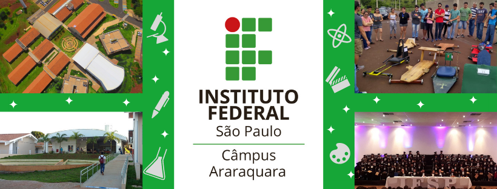

|

|
Sobre o IFSP:
O Instituto Federal de Educação, Ciência e Tecnologia de São Paulo – IFSP – é uma autarquia federal de ensino.
Fundada em 1909, como Escola de Aprendizes Artífices, é reconhecida pela sociedade paulista por sua excelência no ensino público gratuito de qualidade.
Durante seus 105 anos de história, recebeu, também, os nomes de Escola Técnica Federal de São Paulo e Centro Federal de Educação Tecnológica de São Paulo. Com a transformação em Instituto, em dezembro de 2008, passou a ter relevância de universidade, destacando-se pela autonomia.
Com a mudança, o Instituto Federal de São Paulo passou a destinar 50% das vagas para os cursos técnicos e, no mínimo, 20% das vagas para os cursos de licenciatura, sobretudo nas áreas de Ciências e da Matemática. Complementarmente, continuará oferecendo cursos de formação inicial e continuada, tecnologias, engenharias e pós-graduação.
Além dos cursos presenciais, o Instituto Federal de São Paulo oferece os cursos Técnicos em Administração e em Informática para Internet e, a partir de 2012, o superior de Formação de Professores na modalidade de Ensino a Distância (EaD).
O IFSP é organizado em estrutura multicampi e possui aproximadamente 24 mil alunos matriculados nos 38 campi e mais 4 mil alunos nos 19 polos de educação a distância distribuídos pelo estado de São Paulo.
|